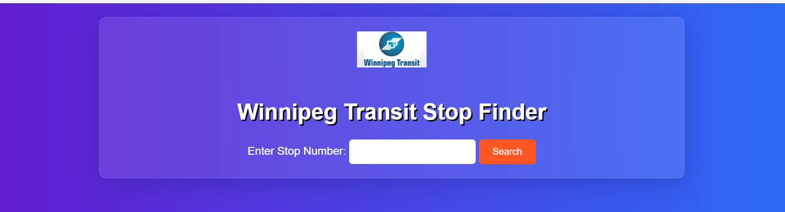
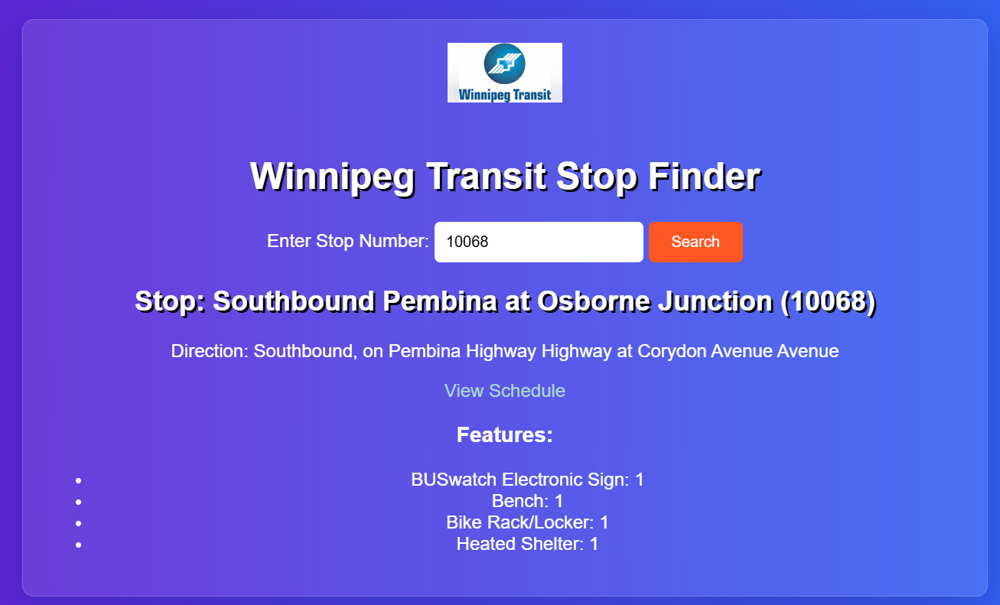
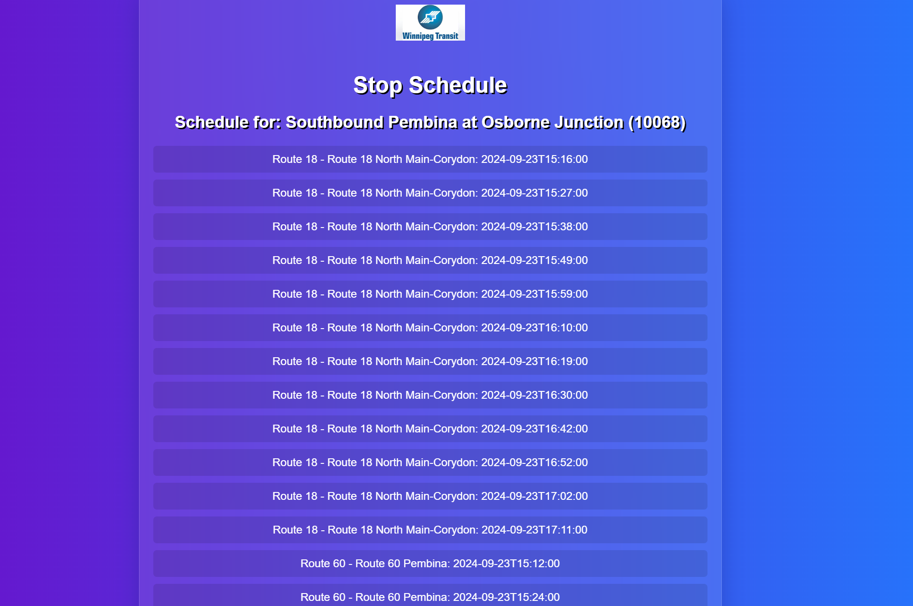

Project 2: Winnipeg Bus Stops Search
Website build to display Bus stops and their real-time schedule using Winnipeg Transit API
This website uses user input to fetch the result from the API and output results accordingly .
User Features:
- Search for Stops: Users can search for any bus stop available in the API and view relevant information.
- Stop Details: Users can see features associated with the stop they searched for, fetched directly from the API.
- Live Stop Schedule: Users can view the live bus schedule for a specific stop.
Project Gallery

This is the landing page where users can search for their desired bus stop using a search bar.

This is the search results page, showing the features of the bus stop. It also includes a button labeled "View Schedule" to display the bus schedule for that stop.

This page displays the bus schedule for the selected stop.